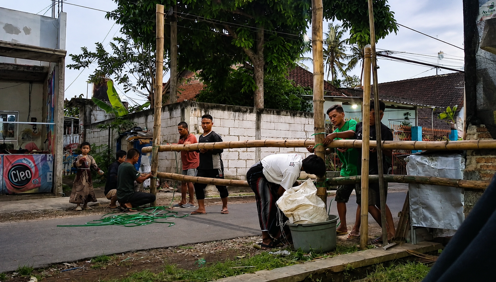

Kenali Sejarah, Potensi, Pemerintahan, Budaya, dan Kehidupan Masyarakat Desa Sumberkradenan melalui Portal Informasi Resmi Desa.
Penduduk
Dusun
Luas Wilayah
Kab. Malang

Desa Sumberkradenan merupakan salah satu desa di Kecamatan Pakis, Kabupaten Malang yang memiliki potensi besar pada sektor pertanian, perkebunan, UMKM, dan industri rumahan. Desa ini terdiri atas empat dusun yaitu Krajan, Premban, Bonangan, dan Jebuk.
Masyarakat Desa Sumberkradenan hidup dengan semangat gotong royong serta menjaga tradisi lokal yang masih lestari hingga saat ini.
SelengkapnyaDesa Sumberkradenan memiliki berbagai potensi yang berkembang dari sektor pertanian, UMKM, industri rumahan, hingga budaya masyarakat yang masih terjaga.
Lahan pertanian menjadi sumber mata pencaharian utama masyarakat dengan komoditas padi, jagung, dan tebu.
Produksi tahu, tempe, lontong serta berbagai usaha rumahan yang menjadi penopang ekonomi masyarakat.
Industri genteng dan usaha kecil lainnya terus berkembang sebagai salah satu potensi ekonomi desa.
Tradisi gotong royong, kegiatan tahlil, dan budaya lokal masih menjadi identitas masyarakat desa.
Desa Sumberkradenan terdiri dari empat dusun yang memiliki karakter, potensi, serta budaya yang berbeda-beda. Mari kenali lebih dekat setiap wilayah desa.
Pusat pemerintahan desa dan pelayanan masyarakat.
Sentra pertanian, perkebunan, dan pondok pesantren.
UMKM tahu-tempe, perdagangan, dan pertanian.
Industri genteng, tahu, lontong, serta budaya tahlilan.
Kantor Desa Sumberkradenan melayani masyarakat dengan pelayanan yang cepat, ramah, dan transparan.
Desa Sumberkradenan, Kecamatan Pakis, Kabupaten Malang, Jawa Timur
081324591630
sumberkradenanofficial@gmail.com
Senin - Jumat
08.00 - 13.00 WIB